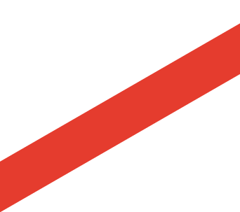
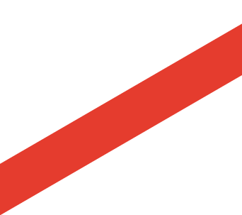

Eudoxus’s planetary model is an outdated and incorrect model of the solar system/universe, but it is an example of how we can turn mistakes into great discoveries...
Ken Adrian A. AlupitPatrick Miguel M. Babala, most commonly known as Pat, is a person that can befriend anyone he wants to. He is a very chill person, that is what makes him a very approachable person. He has been my friend ever since I started studying at CIIT SHS...
Ken Adrian A. AlupitCosmopoint International Institute of Technology or CIIT is a school that provides exceptional education and prepares students for the 21st-century industry standards. CIIT Senior High School offers three strands, media and visual arts under the arts and design track...
Ken Adrian A. AlupitWe live in a pandemic time right now. Almost all of the activities we do before are now done on the internet, and this includes education. The sudden shift in the delivery of knowledge reveals new types of students in the online environment...
Ken Adrian A. AlupitOur computers are one of the most essential things in our lives, especially right now that there’s a pandemic where we use our computers almost all day, every day. We need to protect our computers in any way we can...
Ken Adrian A. AlupitEudoxus’s planetary model is an outdated and incorrect model of the solar system/universe, but it is an example of how we can turn mistakes into great discoveries. Eudoxus of Cnidus was an ancient Greek astronomer, mathematician, and scholar. He is also a student of Archytas and Plato who are both ancient Greek philosophers. Eudoxus’s model is a geocentric planetary model that depicts Earth as the center of the universe/solar system where all of the heavenly bodies (i.e planets, solar systems, and stars) revolve around Earth. It is unlike the heliocentric planetary model that is used today, where the planets revolve around the sun. Eudoxus’s planetary model is undeniably incorrect. A reason for it to be incorrect is the use of a geocentric planetary model instead of a heliocentric model that is more accurate.
There are also other reasons why it is considered incorrect. Eudoxus’s planetary model helped shape our understanding of the solar system and planetary revolution by introducing ideas and concepts on how the universe/solar system could have worked. Eudoxus is a mathematician and an astronomer, which explains how he came up with his idea of a geocentric solar system where he calculated the time in which the heavenly bodies revolve around Earth. His model consists of 27 concentric spheres around Earth where each planet resides and revolves opposite to each other creating a figure 8 motion. Eudoxus’s model depicts Earth as the center of the solar system with the heavenly bodies arranged with the Moon at the closest with three spheres, Mercury at the second with four spheres, Venus at the third with four spheres, the Sun at the fourth with three spheres, Mars at the fifth with four spheres, Jupiter at the sixth with four spheres, and Saturn in the seventh with four spheres. The model also has fixed stars that reside on the last sphere.
The Eudoxus model answers the question of how the heavenly bodies revolve around Earth with a specific schedule/time and the retrograde motion of the planets seen through Earth. Eudoxus’s model is not representative of how the planets work. Considering the technology at the time that Eudoxus created the model, it is a good representation and stepping stone to further improve our knowledge of the solar system and the universe. Eudoxus’s model depicted the arrangement of the heavenly bodies with accuracy and a few incorrect placements, but for the most part, his model is representative of our understanding of the solar system today. His model has been improved by other people as well. It is the reason why making a mistake is not bad. It is because we can learn from those mistakes and adopt new methods for a better understanding of the idea.
There is a lot of incorrect things about Eudoxus’s model. The model doesn’t take into consideration the variable distance of the heavenly bodies. The brightness of the planets shoulddiffer depending on how far they are from Earth, but Eudoxus’s model doesn’t tackle the phenomenon. Instead, the planets are placed in concentric spheres, which should make every planet the same brightness wherever it is, which is not the case. The model also depicted that the stars are fixed in place in the outermost sphere after Saturn, which is incorrect, and that the Earth is also fixed in place and doesn’t revolve like the other planets. It also depicts the Sun in the position of Earth. It is the first understanding of the placement of the Earth/Sun because it is in the Bible.
The Eudoxus Model is not the greatest model of the universe/solar system because of the incorrect parts. But it delivered a very detailed explanation of how the planets could have worked. The model accounted for the retrograde motion of the planets and stars makes it a geocentric solar system wherein Earth is in the middle of the solar system/universe. The model has helped and inspired other people to work, experiment, and improve upon Eudoxus’s idea. This is how Eudoxus’s planetary model helped shape our understanding of the solar system and planetary revolution by providing other people a stepping stone for them to further improve his idea. Even if an idea is wrong, it could still be helpful to other people by exploring more on how they can improve on an idea by taking notes and inspiration into how the idea was made.
References
Pogge, R. (2008, November 28). Lecture 13: The Harmony of the Spheres: Greek Astronomy. Lecture 13: Greek Astronomy, from http://www.astronomy.ohio-state.edu/~pogge/Ast161/Unit3/greek.html
Klus, H. (2017, August 6). Models of the Universe. The Star Garden, from http://www.thestargarden.co.uk/Heliocentric-models-of-the-Solar-System.html
Britannica, T. Editors of Encyclopaedia (2019, April 2). Geocentric model. Encyclopedia Britannica, from https://www.britannica.com/science/geocentric-model
Mendell, H. Ross (2020, March 26). Eudoxus of Cnidus. Encyclopedia Britannica, from https://www.britannica.com/biography/Eudoxus-of-Cnidus
.png)